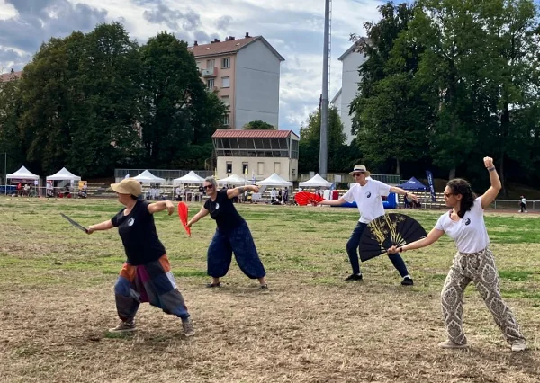
- Accueil
- Galerie
Galerie
Cours en plein air, stages en ateliers, démonstrations : la vie de Yin Yang en images.
Filtrer
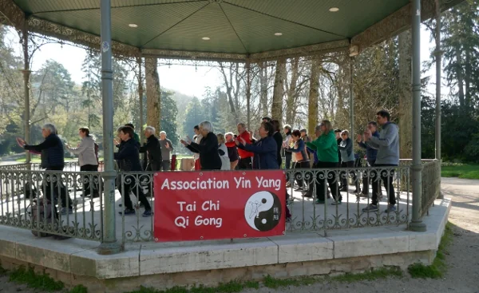
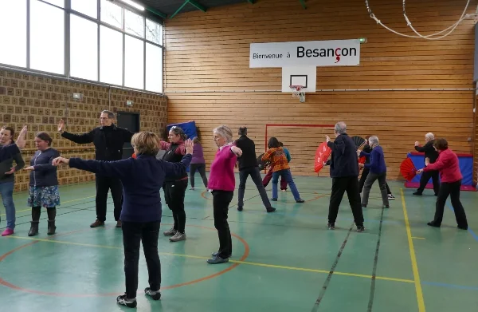
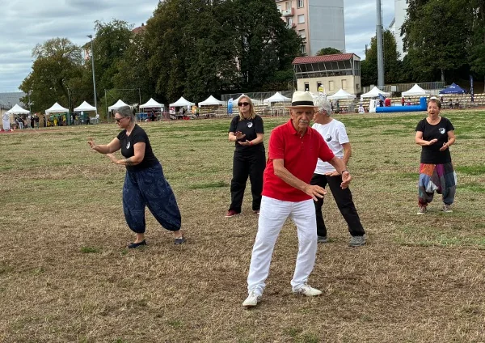
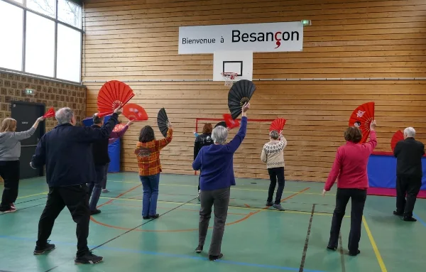
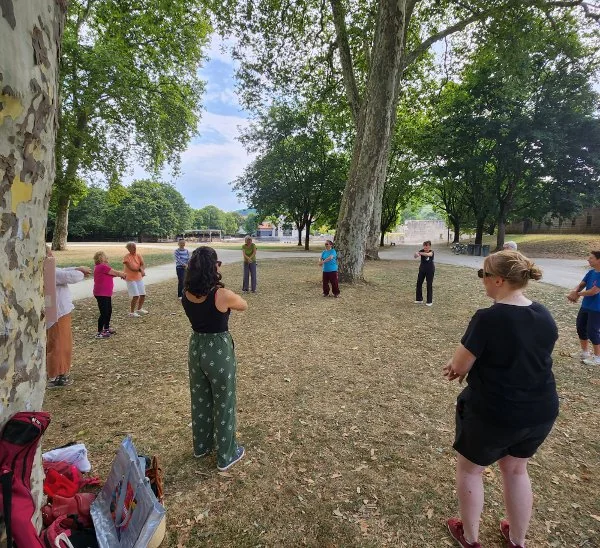
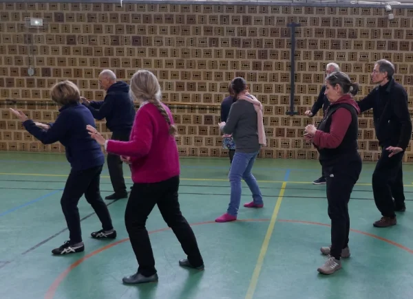
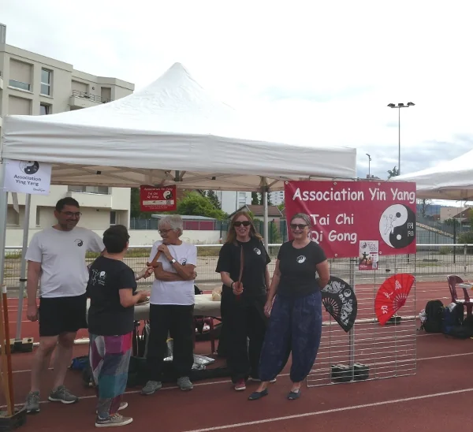
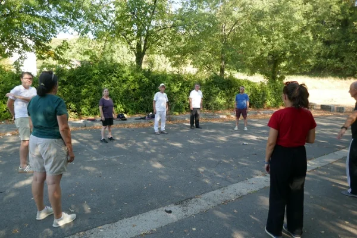
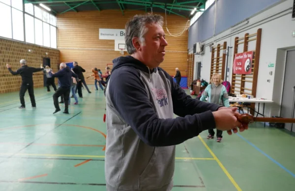
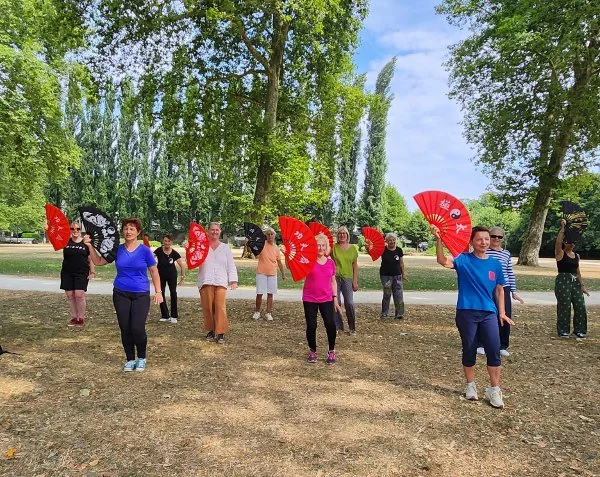
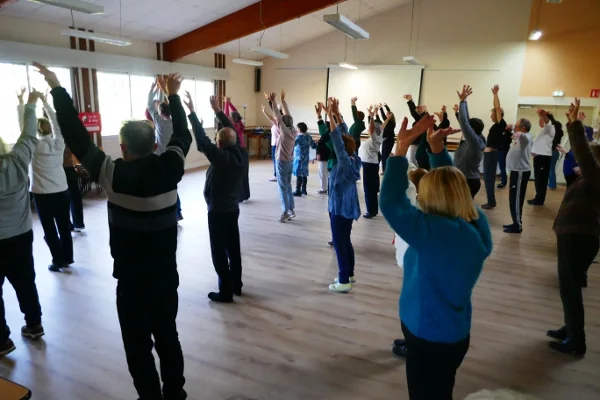
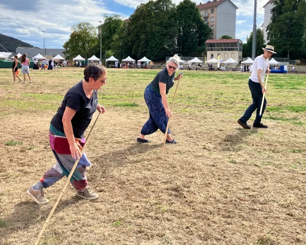
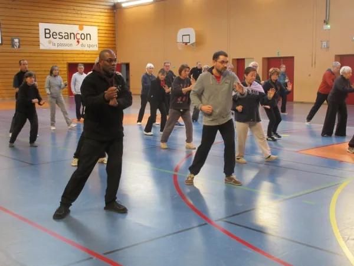
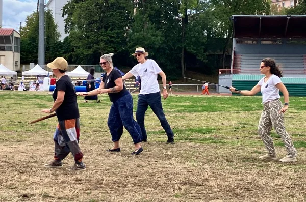
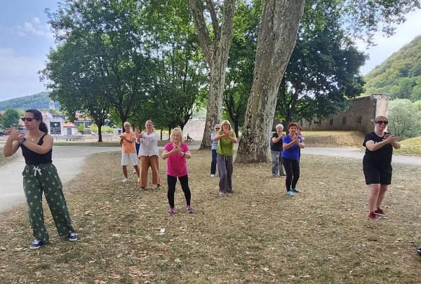
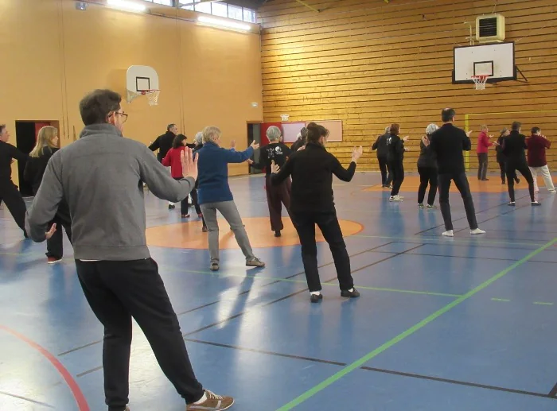
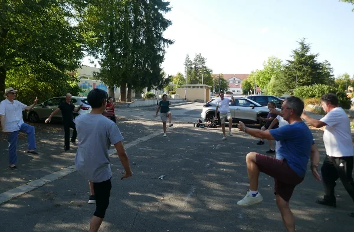
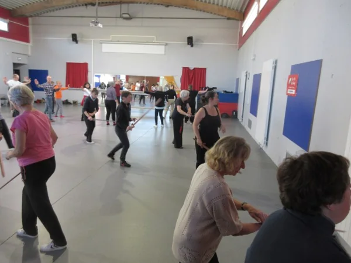
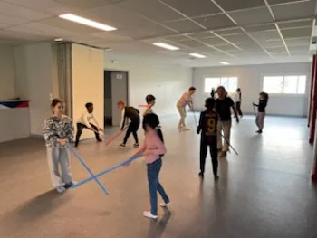
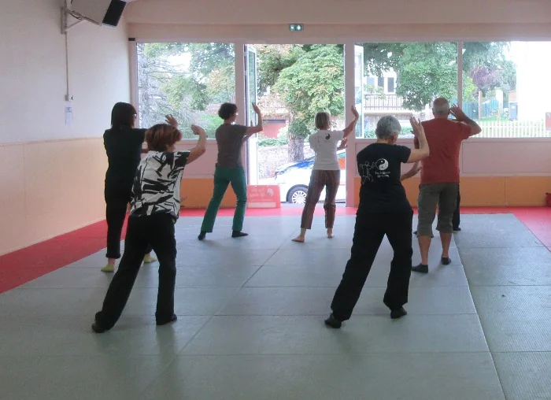
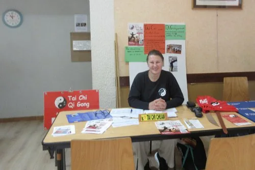
Photos : association Yin Yang et ses adhérents (dont Maurice). Plus de 2 800 photos et de nombreuses vidéos sont à retrouver sur asso-yinyang.fr.